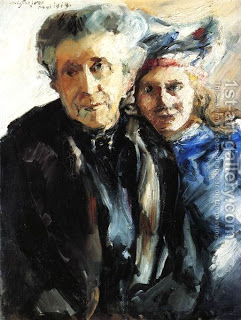

Bava Batra 125 - The Case of a Grandmother Concerning Inheritance

A certain person said to his family, "My property shall go to my grandmother upon my death, and after her lifetime, it shall go to my heirs." The donor had an only daughter, who was married, but she died during the lifetime of her husband and her father's grandmother, and then the husband came forward and claimed the estate.
Ran Huna said, "To my heirs" means "even to the heirs of my heirs," and so the husband inherits. Ran Anan said, "To my heirs" means "but not to the heirs of my heirs," and so the husband does not inherit. And the law is like Rav Anan, but not for his reason. Rather, the husband does not inherit here, because it is only a prospective asset for him, since the grandmother could have prevented the inheritance by selling the property.
Art: Lovis Corinth - Grandmother and Granddaughter